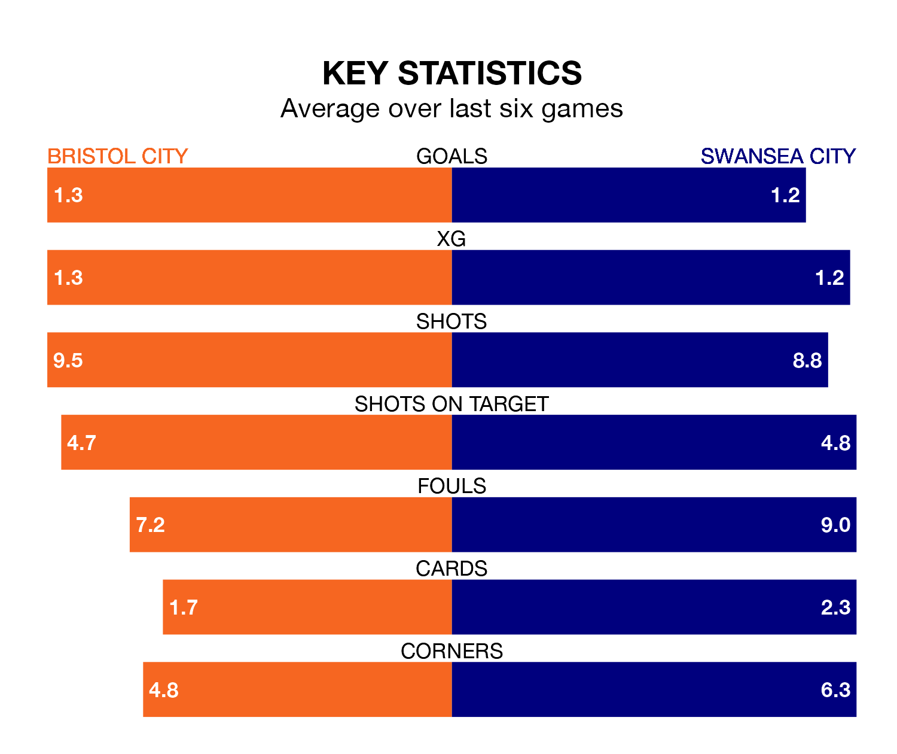

Bristol City welcome Swansea City to Ashton Gate on Sunday lunchtime looking to pick up points to end their four-game losing streak.
Bristol City's struggles have left them with six points from their last six EFL Championship matches, while their opponents have earned 10 from a possible 18.
In the last 10 years, Bristol City and Swansea have played each other on 13 occasions. Bristol City won five of them, Swansea four, and they drew four times.
On average, the Robins scored 1.1 goals and the Swans 1.0 in those matches.
Their last meeting was on September 2, when Bristol City won 2-1 away.
With 41 goals in 36 games so far this season, Bristol City are scoring at below the league average rate with 1.1 goals per game. But they are conceding fewer than average too, letting in 43 goals at a rate of 1.2 per game.
Swansea are also below average scorers, with 1.3 goals per game, compared to a league average of 1.4. They have conceded 1.6 goals per game.
Swansea City are 15th in the table after 36 games, of which they have won 11 and drawn 10, earning 43 points.
The Robins are one place ahead of the Swans in 14th, with 12 wins and eight draws putting them on 44 points.
Bristol City's last match was on Tuesday, a 3-2 loss against Ipswich Town, with Anis Mehmeti and Tommy Conway getting the goals for the Robins.
Swansea drew 1-1 with Watford last time out, on Wednesday, with Ryan Andrews on the scoresheet.
Sunday's match will be refereed by Matt Donohue, who has taken charge of 22 EFL Championship games so far this season, issuing one red card and booking 95 players. He has awarded three penalties.
The last Bristol City game Donohue refereed was a 3-1 home win against Southampton on February 13. His last Swansea match was their 2-2 draw away at Birmingham City on January 13.
Updated: 09:34 (UTC), 08/03/24